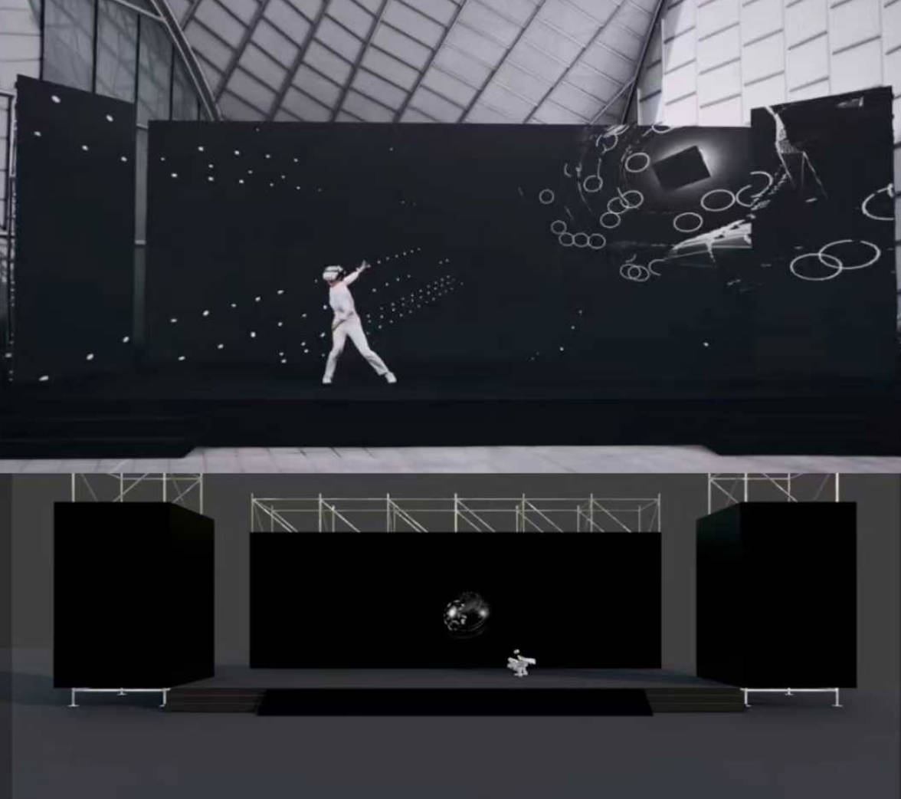
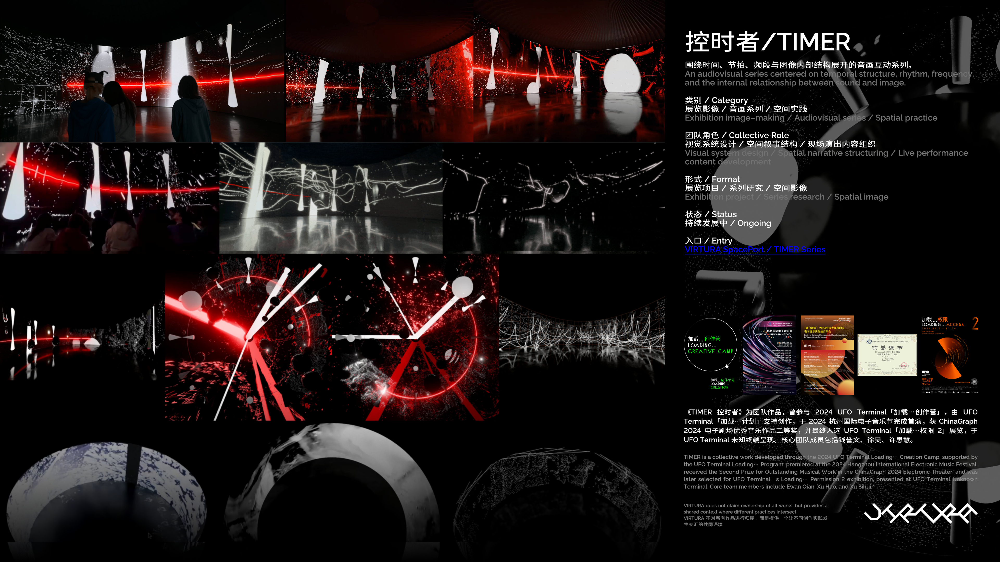
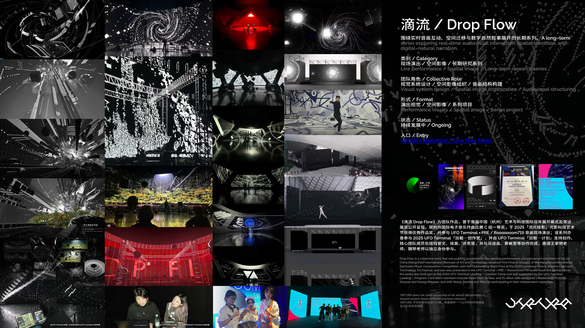
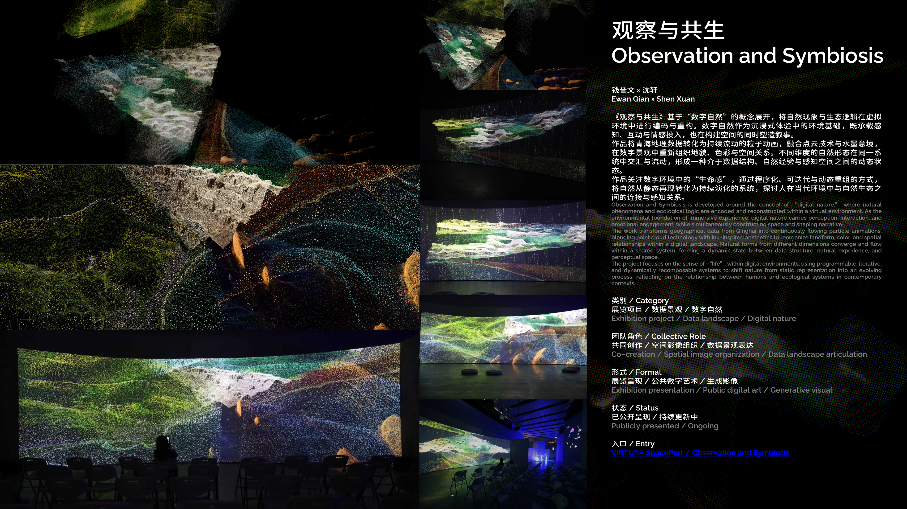

Spatial Scene Archive
围绕作品转译、场景采样与空间观看组织的一组精选入口。
Selected Entries

TIMER / 时间结构入口
围绕时间结构、音画残影与空间化版本继续展开。

Drop Flow / 观看入口
更适合作为观看室前厅，而不是继续堆叠版本说明。

Observation and Symbiosis / 展览入口
适合承接展览、数字自然与后续工作坊路径。